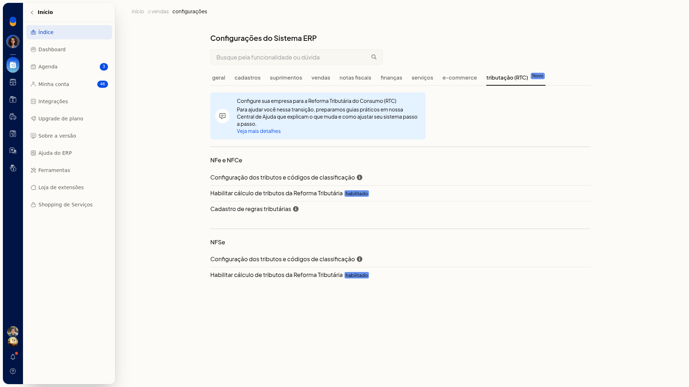
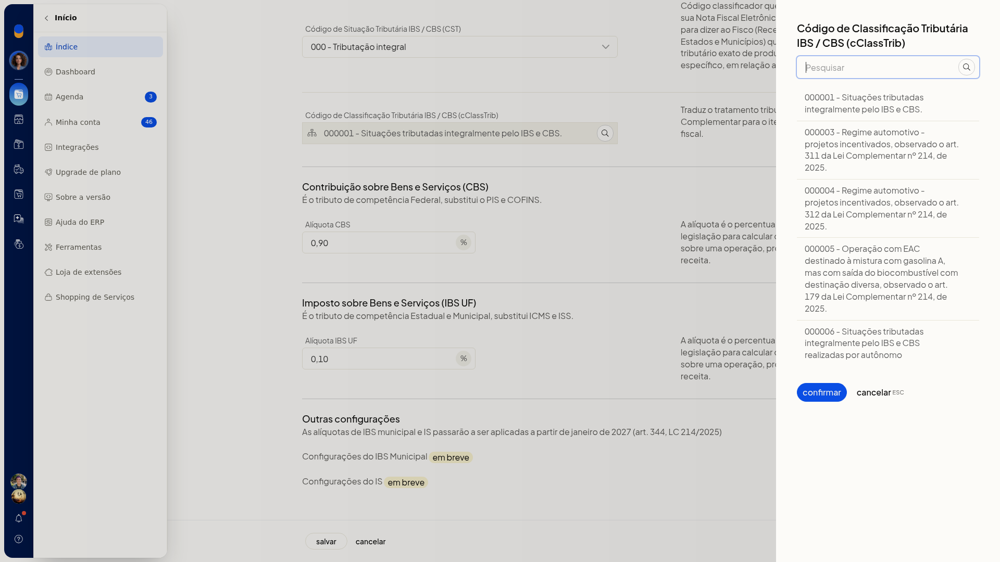
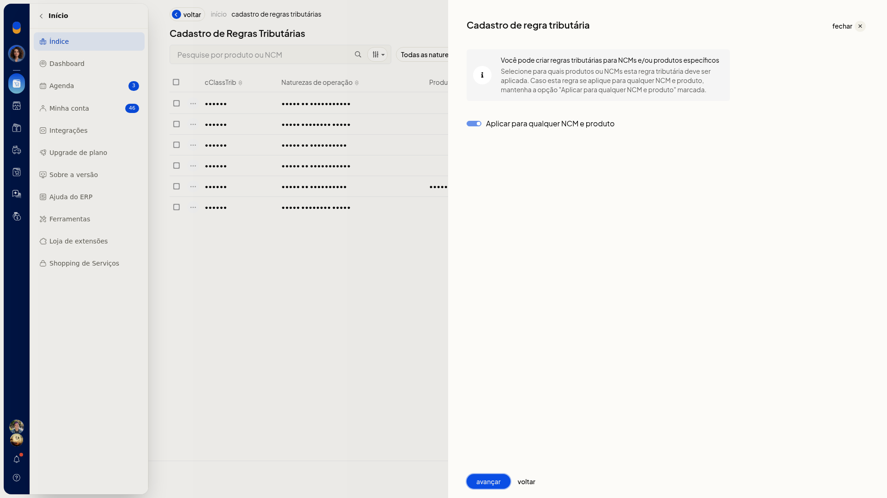
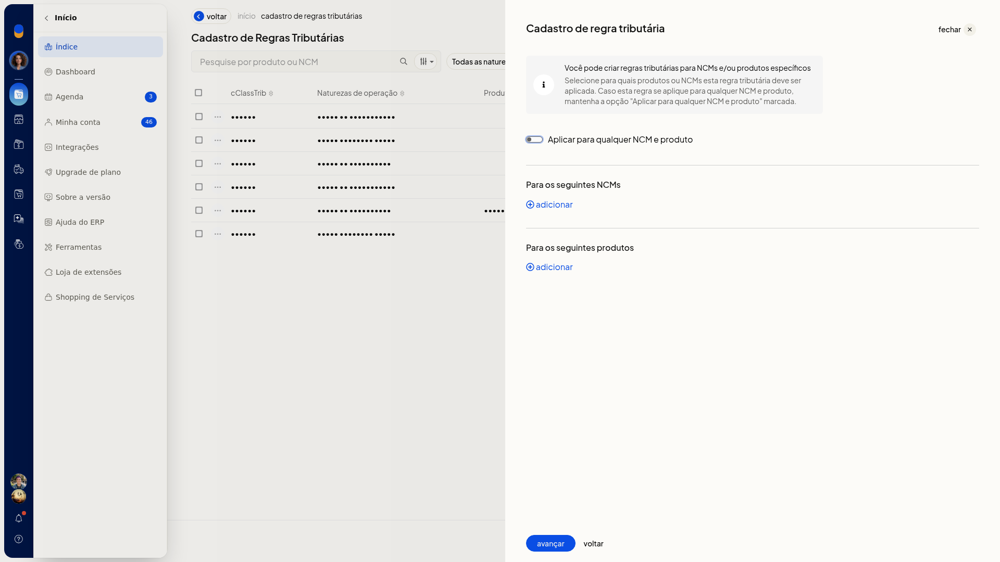
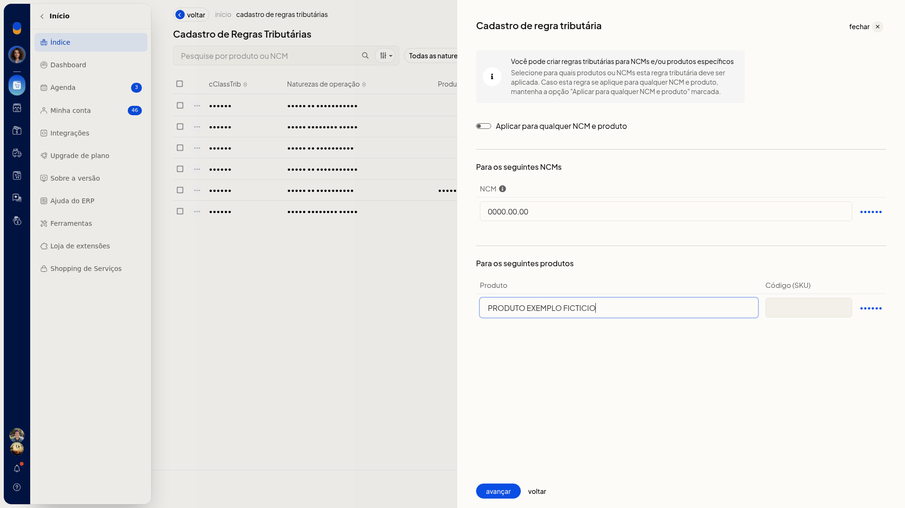
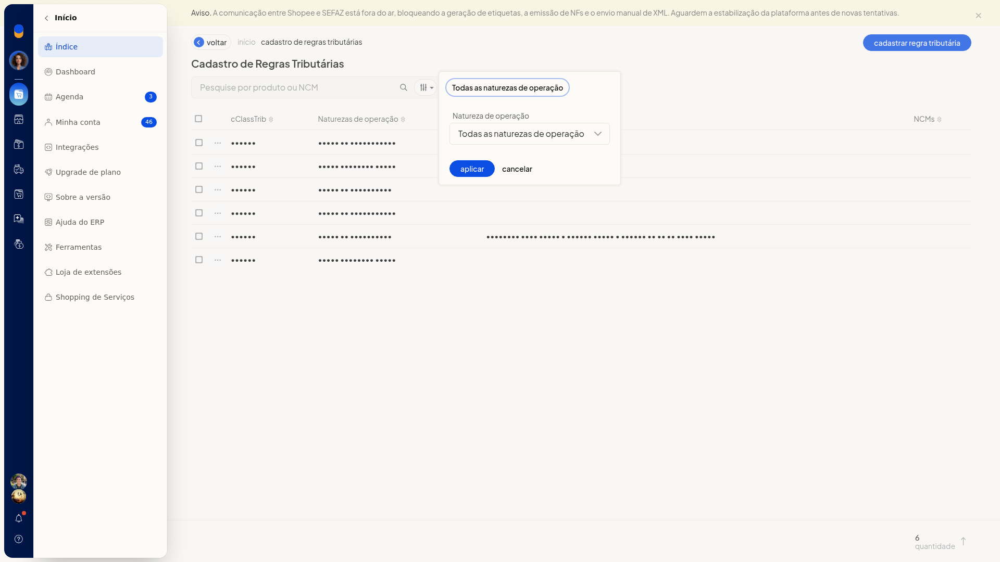

Reforma Tributária: emitir NF-e e NFC-e (inclui débito e crédito)
Em Tributação (RTC), no ERP da Olist, você define como o IBS e a CBS da Reforma Tributária do Consumo são classificados e calculados nas NF-e e NFC-e de produtos.
A regra geral vale como padrão. Com o cálculo habilitado, o ERP considera esses tributos e os envia à SEFAZ na emissão. Quando um produto não deve seguir a regra geral, você cadastra uma regra por NCM, produto e natureza de operação.
Pré-requisitos
- Para a regra específica e para o filtro da lista, as naturezas de operação já precisam estar cadastradas na empresa.
- Se a regra não for para todos os itens, tenha o NCM e a identificação do produto.
- Se Tributação (RTC) não aparecer, peça acesso ao administrador da conta.
Importante
- IBS Municipal e IS aparecem como em breve, com efeito citado para janeiro de 2027, e não são editáveis.
- No cálculo da NF-e e da NFC-e, o Regime Normal passa a ser obrigatório em janeiro de 2026. Simples e MEI seguem como simulação até o uso obrigatório em 2027.
- A regra específica só se aplica quando o produto não segue a regra geral.
Instruções
Acesse Configurações > Configurações ERP > Tributação (RTC).

Regra geral dos produtos
-
Em NFe e NFCe, abra Configuração dos tributos e códigos de classificação. O texto da tela informa que essa regra geral será o padrão dos produtos.
-
Selecione o CST. Nenhum campo desta configuração é obrigatório. As opções são: 000 - Tributação integral, 010 alíquotas uniformes, 011 alíquotas uniformes reduzidas, 200 Alíquota reduzida, 221 Alíquota fixa proporcional, 400 Isenção, 410 Imunidade e não incidência, 510 Diferimento, 515 Diferimento com redução de alíquota, 550 Suspensão, 620 Tributação Monofásica, 800 Transferência de crédito, 810 Ajuste de IBS na ZFM, 811 Ajustes, 820 Tributação em documento específico e 830 Exclusão da Base de Cálculo.

-
Informe o cClassTrib. Na consulta, use Pesquisar, confirme com Confirmar ou feche com Cancelar sem aplicar um código novo.

-
Informe CBS e IBS UF com vírgula como separador decimal, por exemplo 0,90 e 0,10. Essa classificação e essas alíquotas passam a ser o padrão das NF-e e NFC-e.
Cálculo na emissão
-
Em NFe e NFCe, abra Habilitar cálculo de tributos da Reforma Tributária.
-
Marque Habilitar o cálculo de tributos da Reforma Tributária. Com a opção habilitada, o ERP calcula e envia IBS e CBS à SEFAZ nas notas.

Regra específica
-
Em NFe e NFCe, abra Cadastro de regras tributárias. O texto informa que a regra específica vale quando o produto não segue a regra geral.

-
Clique em Cadastrar regra tributária. O primeiro passo é Dados do IBS/CBS.

-
Selecione o CST, consulte o cClassTrib e confirme o código. Preencha CBS e IBS UF com vírgula decimal. IBS Municipal pode aparecer como 0,00 e não é editável. IS pode aparecer vazio e não é editável.


-
Clique em Avançar. Deixe Aplicar para qualquer NCM e produto ligado para abranger todos os itens, ou desligue para informar NCM e/ou produto.

-
Com o interruptor desligado, informe o NCM. O código completo é reformatado como 0000.00.00. Use ? para um grupo, por exemplo 8471.??.??. Clique em salvar na linha do NCM.



-
Adicione o produto pelo nome, SKU ou GTIN e preencha Código (SKU).


-
Clique em Avançar e marque as naturezas de operação que devem usar a regra, por exemplo Venda de mercadorias (Saída).
-
Clique em Salvar regra. A regra não é criada até esse clique. Voltar sai do assistente e volta a Tributação (RTC) sem criar a regra.


Consulta das regras
-
Abra Cadastro de regras tributárias em NFe e NFCe. A lista Cadastro de Regras Tributárias mostra cClassTrib, Naturezas de operação, Produtos, NCMs e um contador de quantidade.
-
Pesquise em Pesquise por produto ou NCM. O refinamento oferece produto, ncm e Não refinar.

-
Abra Todas as naturezas de operação, escolha a natureza e clique em aplicar. cancelar fecha o filtro sem aplicá-lo.

-
No menu da linha, a ação disponível é excluir. Use excluir somente se a regra não deve ser mantida.

Resultado
Com o cálculo habilitado, a emissão da NF-e e da NFC-e calcula e envia IBS e CBS à SEFAZ. A configuração geral mostra o CST, o cClassTrib e as alíquotas em uso. As regras salvas aparecem em Cadastro de Regras Tributárias.
Informações adicionais
- O cadastro de regras não oferece planilha, modelo nem importação.
- A pesquisa refina apenas por produto, ncm ou Não refinar.
- A única ação da linha é excluir.